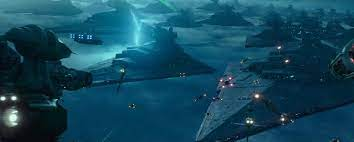
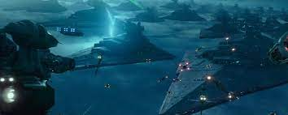

Historia
La Resistencia sobreviviente se enfrenta a la Primera Orden, y Rey, Finn, Poe y el resto de los héroes encararán nuevos retos y una batalla final con la sabiduría de las generaciones anteriores.
Resistencia y la galaxia en general celebran su victoria contra Sidious y la flota del Sith Eterno. En Ajan Kloss, los pilotos victoriosos y los guerrilleros de la Resistencia se abrazan. Finn observa como Rose abraza a Chewbacca. Maz Kanata otorga a Chewbacca una Medalla de Valentía, que Han recibió después de la Batalla de Yavin. Poe y Zorii intercambian una mirada y parece que Poe está tratando de preguntarle a Zorii si le gustaría celebrar con él en privado, a lo que ella niega con la cabeza. Poe luego abraza a Finn. Poco después, Rey regresa a bordo del legendario x-wing Rojo Cinco de lukie skywalker. Jannah le pregunta a Lando de dónde es y él le dice que es del sistema Oro. Lando a su vez le pregunta a Jannah de dónde es, y ella le dice que no lo sabe, y Lando responde diciendo «bueno, averigüémoslo». Rey ve a Finn y Poe, y los tres se abrazan.
En Tatooine, Rey vuela el Halcón Milenario pasando un reptador de las arenas jawa. Junto con BB-8, Rey visita la abandonada granja de los Lars, donde entierra los sables de luz de Anakin y Leia en la arena, habiendo construido ya uno propio —un sabe de luz de empuñadura negra con hoja amarilla. Una local le pregunta su nombre y, viendo los espíritus de Luke y Leia observando, Rey le da su nombre como «Rey Skywalker». Rey y BB-8 observan los soles
 
